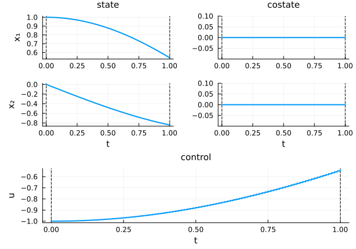
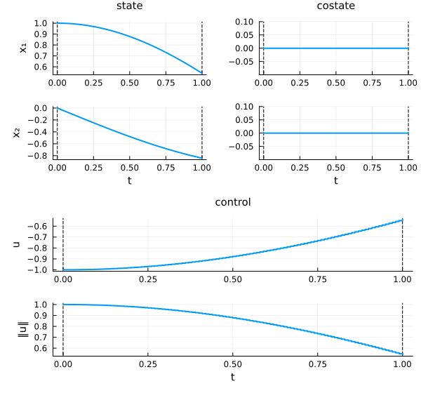
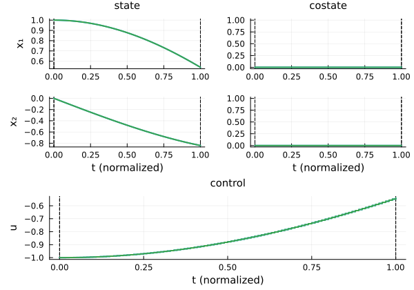

Plotting
When Plots is loaded, the CTModelsPlots extension adds a recipe so a Solution can be drawn directly with plot / plot!. The recipe lays out the state, control, costate (and, when present, path constraints and their duals) on a shared time axis.
using CTModels
using Plots # activates the CTModelsPlots extension
pre = CTModels.PreModel()
CTModels.variable!(pre, 0)
CTModels.time!(pre; t0=0.0, tf=1.0)
CTModels.state!(pre, 2)
CTModels.control!(pre, 1)
CTModels.dynamics!(pre, (r, t, x, u, v) -> (r[1] = x[2]; r[2] = u[1]; nothing))
CTModels.objective!(pre, :min; lagrange=(t, x, u, v) -> u[1]^2)
CTModels.time_dependence!(pre; autonomous=true)
ocp = CTModels.build(pre)
N = 101
T = collect(range(0.0, 1.0; length=N))
sol = CTModels.build_solution(ocp, T, hcat(cos.(T), -sin.(T)),
reshape(-cos.(T), N, 1), Float64[], zeros(N, 2);
objective=0.5, iterations=10, constraints_violation=1e-9,
message="ok", status=:optimal, successful=true)Default plot
Plots.plot(sol)
Layout and control options
The recipe accepts keyword arguments that control the arrangement and how the control is displayed:
| Keyword | Values | Effect |
|---|---|---|
layout | :group / :split | one figure per quantity, or state/costate split |
control | :components / :norm / :all | plot each control, its norm, or both |
time | :default / :normalize | physical time, or rescaled to $[0, 1]$ |
Plots.plot(sol; layout=:split, control=:all)
Overlaying solutions
plot! adds a solution to an existing figure — handy for comparing two solves on the same axes:
plt = Plots.plot(sol)
Plots.plot!(plt, sol; time=:normalize)
plt
Because the recipe reads the typed solution (its time grids, interpolation kind, and dual structure) rather than raw arrays, the same call works for unified- and multiple-grid solutions alike — see Time grids.